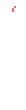
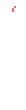
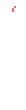
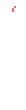

Sans is the older brother of Papyrus and the first character you encounter when first leaving the Ruins. Sans is an essential character to the story of undertale and he is of second importance only to the player. Within undertale sans is seen as lazy and often plays slightly inconvenient pranks, but he is the one in charge of keeping an eye on the player. It is known sans has a scientific background as a quantum mechanics book can be found in his workshop. One of Sans's most important jobs is his final judgement at the end of the game where he talks with the player about how much LOVE they have.
Last modified:
This website © 2023 is based on w4rner's
'Ninety Five' template after Tamara Munzner's and therefore is licensed under CC BY-SA 4.0